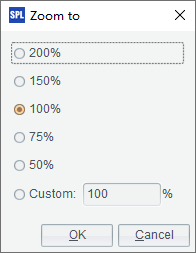
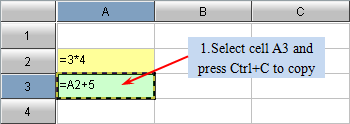

1.2.1 Cell Copy and Paste
In esProc, you can press Ctrl+C and Ctrl+V to copy data or an expression in a cell and paste it on the targeted one. But unlike Excel, the cell copy and paste operations will not adjust the expression automatically.


If you need to adjust the expression in the cell quoted by the expression, press Ctrl-Alt-V to perform the paste. The expression will adapt itself automatically as it will in Excel.


Like Excel, esProc sets it as a rule that a cell with an expression in which both the row number and column number of the referenced cell start with $ will never get adjusted when pasted.